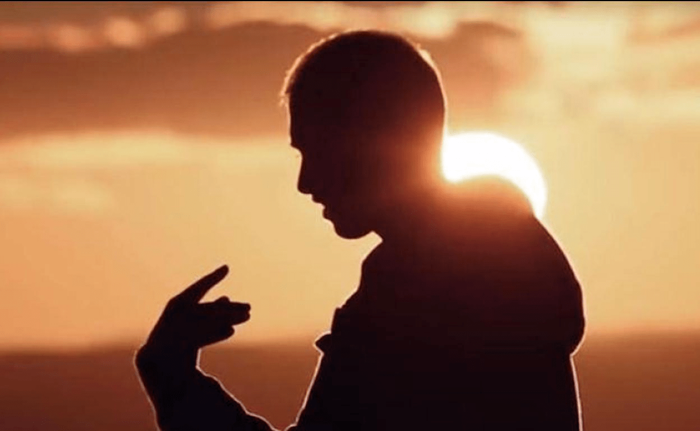
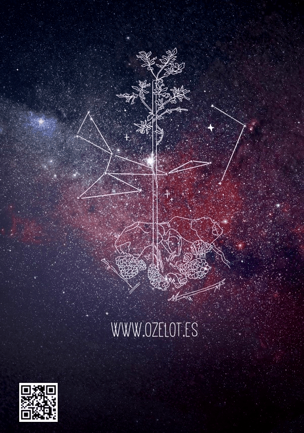
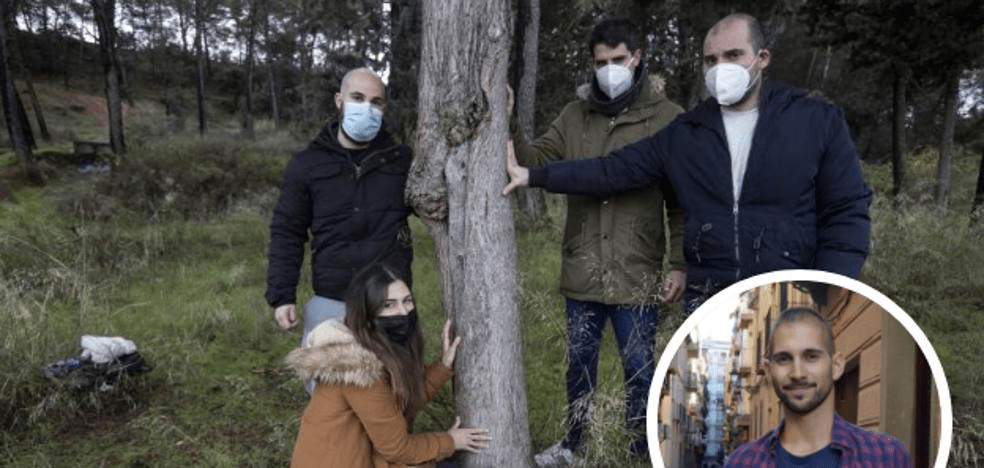

Nacido en Albolote el 12 de marzo del 1991, Ozelot (Fernando Valero) fue un rapero español con un estilo único, empezó en las batallas de gallos y haciendo alguna colaboración con Els1 en sus maquetas, después sacó algunos temas sueltos y su primer maqueta "Singularity" en la cual se burla de la sociedad, religión y menciona algunas cosas relativas a la filosofía, la moralidad o la ciencia.
Se podría denominar en el género de rap conciencia. Ozelot después sacó su primer EP "Dimensiones y cuerdas" donde sus pensamientos y filosofía se hicieron mucho mas profundos, en este EP reflexiona sobre sí mismo, la humanidad y los relaciona con la ciencia esto es un elemento que seguirá haciendo en su próximo EP "El hombre de masa cero".
En este tiempo Ozelot sacaría algunos temas sueltos y poco después empezaría a trabajar en su último EP "El hombre de masa cero" (abreviado como EHDMC) donde relacionaría aún mas a la vida con la ciencia, química, filosofía y haría algunas metáforas a la enfermedad que padecía, en este EP menciona mas a la historia de la humanidad, como los humanos se comportan, la religión y muchas otras cosas que a cualquiera lo puede dejar pensando.
Después de sacar su última canción "Comiendo sin hambre, durmiendo sin sueño, follando sin ganas" (EHDMC IV) moriría el 23 de enero de 2020 debido al cáncer que padecía años atrás, su familia ha revelado toda esta información, ( los que mueren por la vida no pueden llamarse muertos).
Existen dos obras póstumas: "Whatever" (EHDMC V) publicada el 10 de febrero del mismo año y "El hombre de masa cero" (EHDMC VI) lanzada el 18 de septiembre la cual es su última canción según sus familiares han comunicado. Esta canción sirve como despedida de Ozelot y su obra acabando así su ultimo trabajo.
